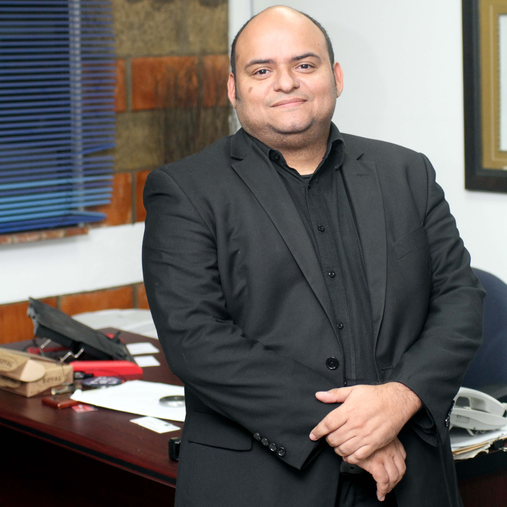

¿Que voy a aprender?
El taller recorre los seis ejes del modelo de Management 3.0
• Motivación
• Empoderamiento/ autoorganización
• Alineación de restricciones
• Autoaprendizaj
• Escalamiento
• Mejora Continua
Expositor: 
Ulises González
Especialista en transformación organizacional a través del management 3.0, dirección de portafolios y desarrollo de productos.
Posee comprobada experiencia con variedad de frameworks y metodologías que van desde Lean thinking, Project Management, Scrum, Kanban y Six Sigma hasta diseño de experiencia con clientes (con prácticas como servucción, canvas y pensamiento de diseñador).
Puede trabajar con diferentes niveles de una organización, desde una pequeña funcionalidad con equipos de desarrollo hasta discutir cambios organizacionales o planificación estratégica con el nivel ejecutivo.
Ha desarrollado roles como líder de transformación, gerente de procesos, proyectos y portafolios en diversas industrias (manufactura, servicios, consultoría e ingeniería) en entornos culturales multidisciplinarios (Venezuela, USA, Chile, Francia y Colombia).
Fundador de Ágiles Panamá movimiento 100% voluntario, no comercial, cuyo propósito es descubrir las mejores maneras de entender, promover y utilizar los valores, principios y prácticas asociadas al agilismo.
Ulises es Ingeniero Mecánico e Industrial con Maestría en Administración (IESA). Posee las certificaciones de PMP, PMI-ACP, Professional Scrum Master (scrum.org), Facilitador certificado en Management 3.0, Lean-Kanban trainer, Six Sigma Black Belt (ASQ), Scrum Manager y Multiplicador B.